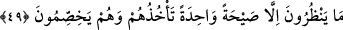

olduğunu iddiâ ettiklerindendir.”
Fakir (Bursevî) der ki: Bu yorum hiçbir ilâhı kabûl etmeyenler hakkında değil,
müşrikler hakkında geçerlidir. Daha önce Mekke’de bazı zındıkların bulunduğu
geçmişti.
Kâfirlerin bu şekilde kıyâmetin derhal gelmesini acele istemeleri ve kıyâmetin
kopmasını geç bulmaları, ancak ilâhî dâveti yalanlamak, haşri ve neşri inkâr etmek
üzere vâki olmuştur. Eğer dâveti tasdik ve ikrar etmek, bu dünya zindanından kurtulmak,
Allah’a duyulan şevk ve O’na kavuşma arzusu için olsaydı, elbette bu durum onlara çok
fayda verirdi. Ölüm sırasında kıyâmet onların aleyhine kopmazdı. Nitekim kıyâmet
mü’minlerin aleyhine kopmaz. Bilakis ölüm onlar için bayram ve sevinç olurdu.
Mesnevî’de der ki:
İnsanlar çarşıda aynı yürürler,
Fakat kimi neşeliyken kimi dertlidir
Aynı şekilde ölürken de aynı gideriz,
Ama yarımız hüsranda iken yarımız bahtiyardır
49. Onlar, birbirleriyle çekişip dururken kendilerini ansızın yakalayacak korkunç
bir sesi bekliyorlar.
Bu âyet Allah Teâlâ tarafından kâfirlere bir cevaptır.
“Onlar,” Mekke kâfirleri “birbirleriyle çekişip dururken kendilerini ansızın
yakalayacak” ve tüm yeryüzü halkına ulaşacak, “korkunç bir sesi” ikincisine ihtiyaç
olmayan, bütün canlıların öleceği sûra birinci defa üfürülmesini “bekliyorlar.”
“
” bir şeyi elde etmek ve sâhip olmaktır. Bu kelime bazen “Dedi ki: Eşyamızı
yanında bulduğumuz kimseden başkasını yakalamaktan Allah’a sığınırız.” (Yûsuf,
12/79) âyetinde olduğu gibi tutmak/almak anlamına gelir. Bâzen de “Allah, O’ndan
başka ilah yoktur; O, hayydir, kayyûmdur. Kendisine ne uyku gelir ne de
uyuklama.” (el-Bakara, 2/255) âyetinde olduğu gibi hâkim ve gâlib olmak mânâsına
gelir. Yine
“
(sıtmaya tutuldu)” denir. Esir düşen kimseye “
” ve “
” denir.
“
” demek onunla tartıştım demektir. “
”nın asıl mânâsı hasımlardan her
birinin diğerinin bir tarafına yapışması, yine hasımlardan her birinin çuvalın bir
yanından tutup çekmesidir.
Mânâ şöyledir: Onlar ticâret, alış-veriş ve diğer muâmelelerinde çekişip tartışırlarken
ve dünya işleriyle meşgul olurlarken, kendisinden gafil oldukları halde kıyamet
kopacaktır. Öyleyse kıyametin alâmetlerinin ortaya çıkmamış olmasına aldanmasınlar ve